Кристина — официантка суши-ресторана «ТАНУКИ». Обычная смена превращается в весёлый хаос: в зале — гости и драка с живой едой, на кухне — конвейер роллов, в подвале — бумаги Анастасии, в кабинете — всё должно быть ровно. Принимай заказы, отбивайся подносом и дойди до четвёртого этажа.
Kristina waits tables at the TANUKI sushi restaurant. An ordinary shift turns into cheerful chaos: guests and a brawl with living food in the hall, a sushi conveyor in the kitchen, Anastasia's paperwork in the basement, and an office where everything must be perfectly straight. Take orders, fight back with your tray and reach the fourth floor.
Собирай роллы по рецепту с ленты. Не тот кусок — БРАК. Хабиба и Али уводят заказы, по ленте едет тапок.
Build rolls from the belt in recipe order. A wrong piece — rejected. Habiba and Ali steal orders; a slipper rides the belt.
«Подпиши акт о том, что акт подписан». Абсурдные задания Анастасии на время, вечером — генуборка с коллегами.
"Sign the act that the act is signed." Anastasia's absurd timed errands, then a deep clean with coworkers.
Карандаши по длине, папки по номерам. Одна ошибка — психоз и бой. Без ошибок — новая счастливая концовка без боя.
Pencils by length, folders by number. One mistake — a breakdown and a boss fight. No mistakes — a new happy ending, no fight.
Загадочная подпись «А.» ведёт вниз. 12 новых комиксных картинок, пять концовок, их можно пересмотреть.
A mysterious signature "A." leads downstairs. 12 new comic panels, five endings you can rewatch.
Утренняя сервировка, гость с корги Бубликом, компания «только кофе», день рождения посреди драки.
Morning table setup, a guest with Bublik the corgi, the "just coffee" crowd, a birthday in the middle of a fight.
Единая перспектива, мебель по росту Кристины, стабильные 60 кадров, урон и рывок видно сразу.
One consistent perspective, furniture scaled to Kristina, a steady 60 fps, damage and dashes read at a glance.
Зал, кухня, подвал и кабинет — у каждого своя механика, враги, музыка и комнаты за дверями.
Hall, kitchen, basement and office — each with its own mechanic, enemies, music and rooms behind doors.
Надя с абсурдными поручениями, Шеф с ножами и сковородой, ревизия Анастасии — и Тёмная Кристина.
Nadya's absurd errands, Chef with knives and a frying pan, Anastasia's audit — and Dark Kristina.
Стальной поднос, острый соус, третья рука… Два предмета — один новый эффект.
A steel tray, hot sauce, a third hand… Two items — one new effect.
Кимоно, пожарная, медсестра, ночная смена, ретро, пляжная и другие — за испытания, стикеры и концовку.
Kimono, firefighter, nurse, night shift, retro, beach and more — for challenges, stickers and an ending.
Ошибки, решения и доверие коллег решают, чем кончится смена. Любую увиденную можно пересмотреть.
Mistakes, choices and your coworkers' trust decide how the shift ends. Rewatch any ending you've seen.
Бесконечная смена, смена дня с общим сидом и восемь испытаний.
Endless shift, a daily shift with a shared seed and eight challenges.
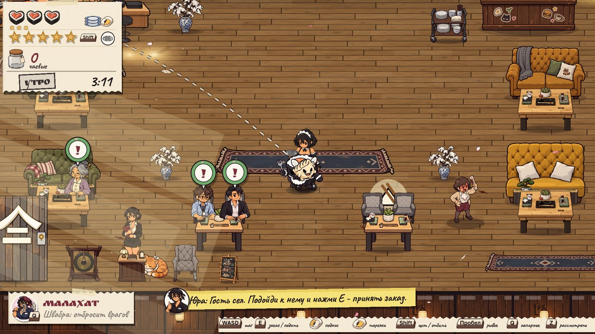
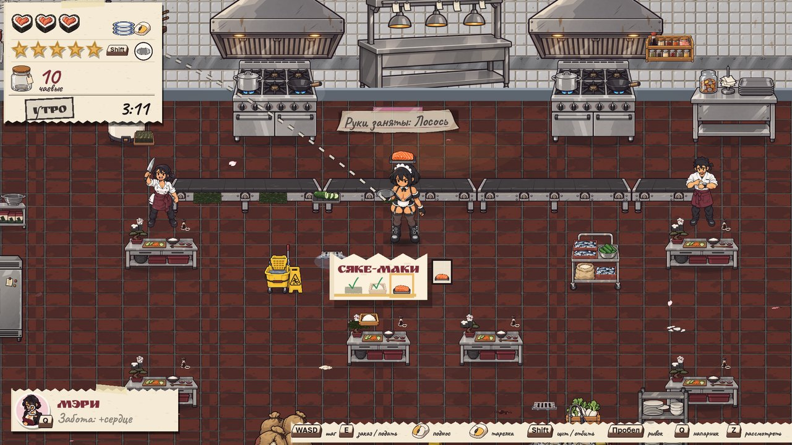
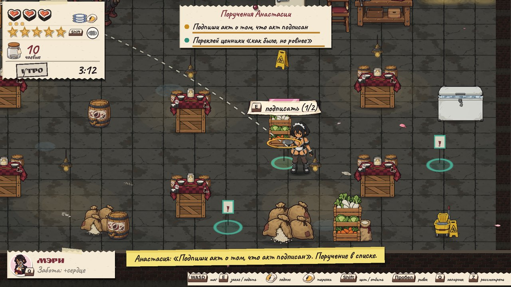
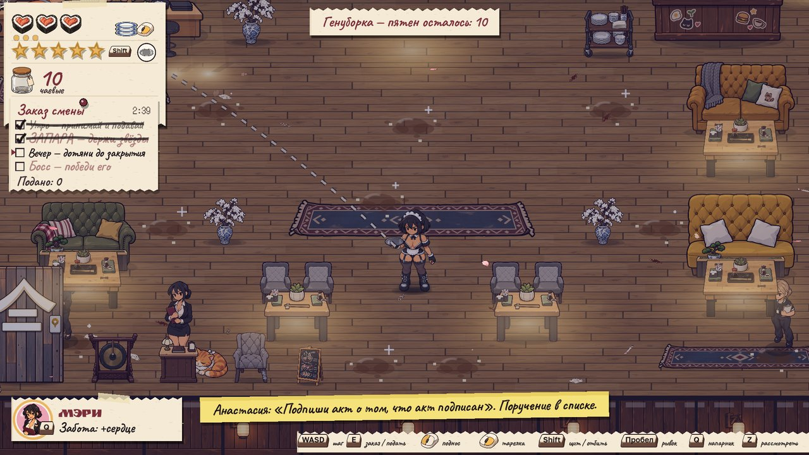
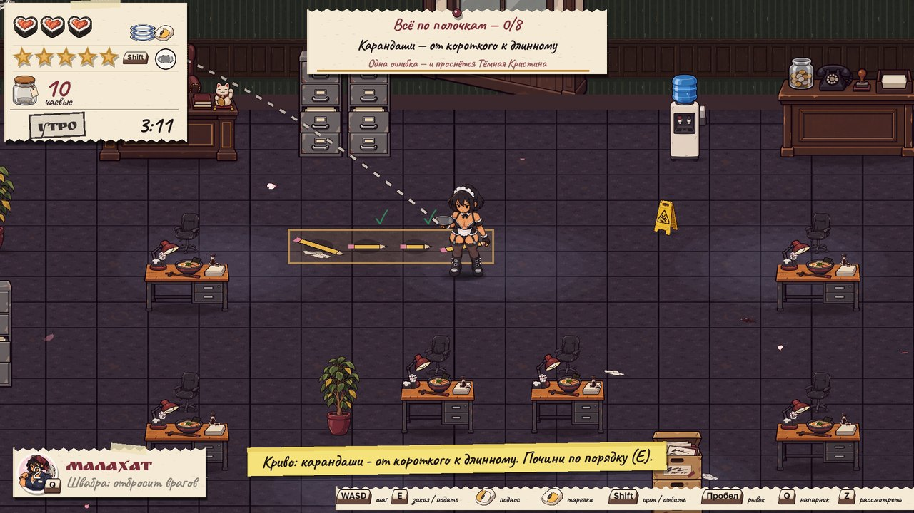
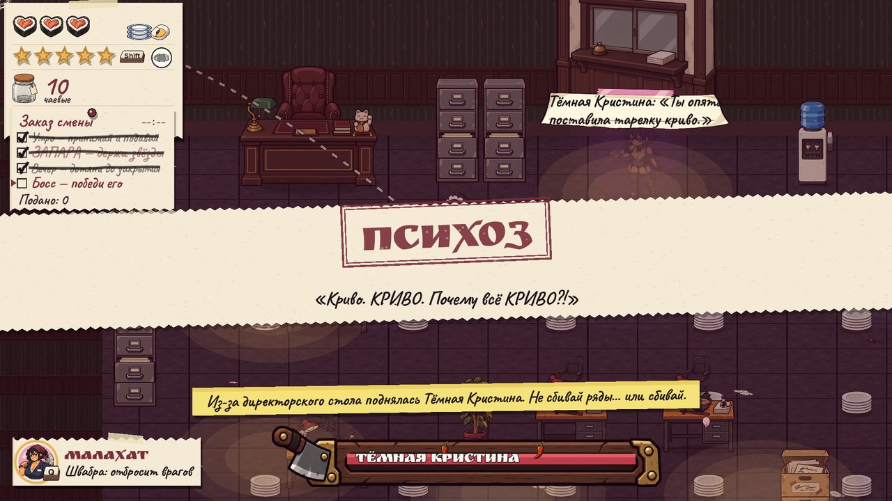
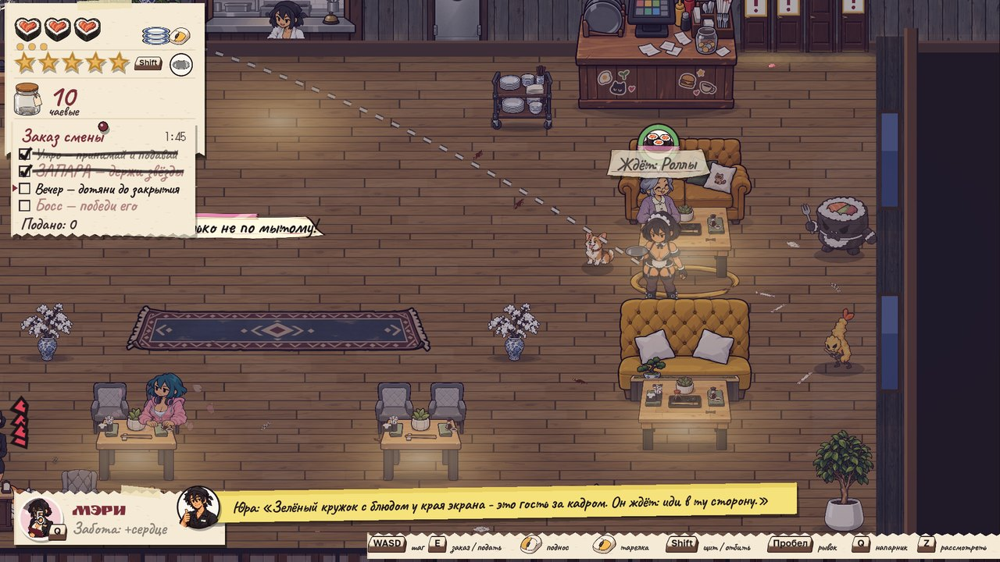
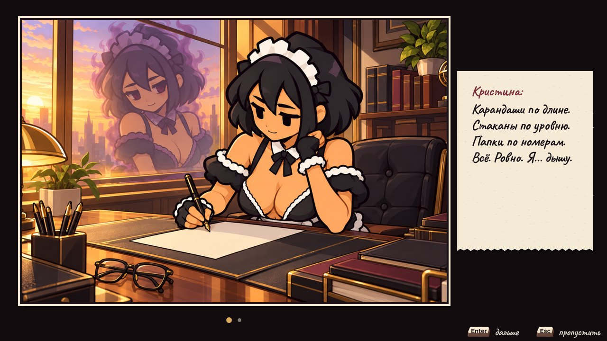
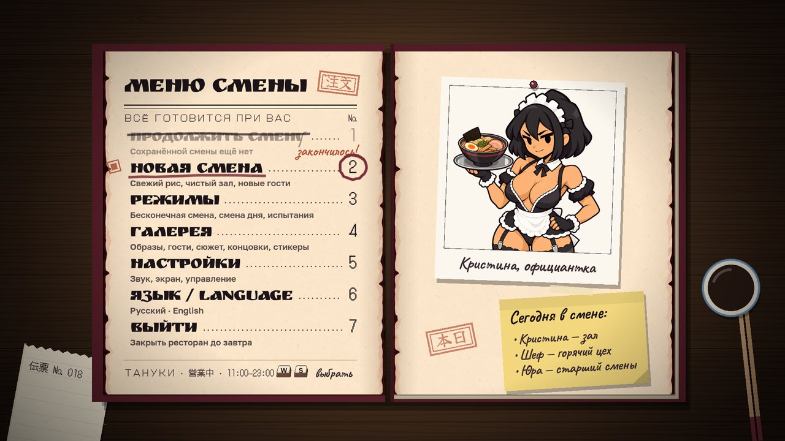
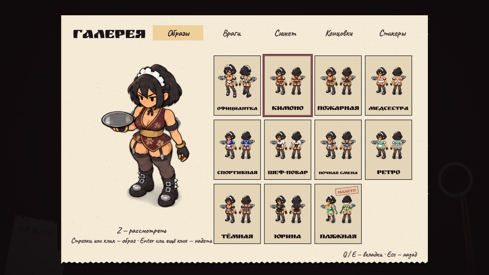
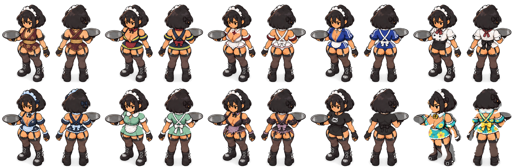
| WASD | шагmove |
| E | принять заказ / взять / податьtake order / grab / serve |
| ЛКМLMB | удар подносомtray smack |
| ПКМRMB | метнуть тарелкуthrow a plate |
| Shift | щит / отбитьshield / parry |
| Space | рывокdash |
| Q | напарникpartner |
| Esc · F11 | пауза · полный экранpause · fullscreen |
Геймпад поддерживается. Клавиши переназначаются в настройках. Есть режим для дальтоников, крупный интерфейс и темп игры 70–100%.
Gamepads are supported. Keys can be rebound in Settings. There's a colorblind mode, a large UI and a 70–100% game speed.